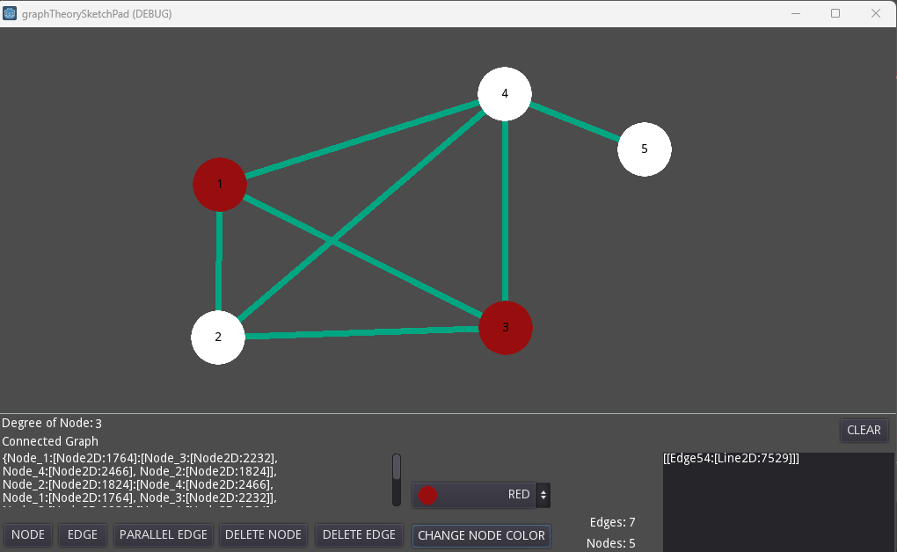

Project: Node Graph Sketch Pad
Graph Thoery Project

Graph Thoery Project
This project was the final project for my graph theory class. I worked individually to create a sketch pad that can create node graphs. The user can create and delete nodes as well as edges. Parallel edges can also be added and the color of the nodes can be changed. The program shows basic information of the graph like the weight of each node when it is hovered, how many edges and nodes are present, what the node tables looks like, and shows all the edge pairs in a dictionary. A quality of life featured added is the ability to move the nodes freely around the board.
I used Godot, a 2D game engine that uses GDscript to create this program. It is structured where each object is a scene (like a class) with its own script to run back end code. The UI was built on the 2D display of Godot. I used simple UI elements like buttons and text boxes as well as more advanced elements like a scrollable text display. There were several minor features added for easier usage like disabling a selected button when pushing another button.